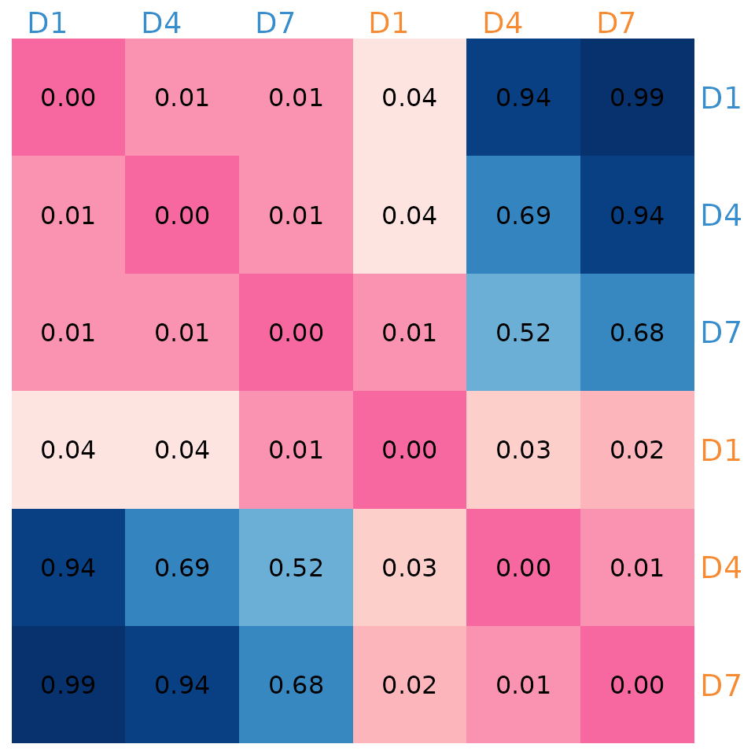

High-Fat High-Sugar case study
Saritha Kodikara
HFHS.RmdIntroduction
In this vignette, we explore the High-Fat High-Sugar (HFHS) case
study using the LUPINE R package. The aim is to demonstrate
how LUPINE can be used to analyse and visualise microbiome data from
mice on a normal diet and an HFHS diet. The focus will be on Day 7 for
both diets. We will conduct network analyses, visualise the networks,
and compare them using IVI values, network distance, and the Mantel
test. Additionally, we will examine the top 15 associations for both
diets using bootstrap-based p-values.
Setup
First, we load the necessary libraries:
library(LUPINE)
library(ggplot2) # ggplot
library(RColorBrewer) # brewer.pal
library(circlize) # colorRamp2
library(igraph) # graph.adjacency
library(dplyr) # mutate
library(tidygraph) # activate
library(ggraph) # ggraph
library(mixOmics) # pca
library(ComplexHeatmap) # Heatmap
library(patchwork) # plotting
library(cowplot) # plotting
library(qs) # qread
set.seed(1234)Load data
To assess the effect of diet on the gut microbiome, 47 C57/B6 female black mice were fed either an HFHS or a normal diet. Faecal samples were collected on Days 0, 1, 4, and 7.
The raw data included 1,172 taxa across all four time points. We
removed one outlier mouse from the normal diet group due to an unusually
large library size. After filtering, we retained 102, 107, 105, and 91
taxa for the normal diet across Days 0, 1, 4, and 7, respectively. For
the HFHS diet, the numbers were 99, 147, 85, and 92 taxa, respectively.
These data are saved as OTUdata_Normal and
OTUdata_HFHS within the HFHSdata object.
We load the HFHSdata object, which contains OTU data,
sample information, taxonomy information, library sizes, and excluded
taxa for both the normal and HFHS diets.
data("HFHSdata")LUPINE network analysis
We use LUPINE to infer co-occurrence networks for both
the normal and HFHS diets. The inferred networks are saved as
net_Normal and net_HFHS.
net_Normal <- LUPINE(HFHSdata$OTUdata_Normal,
is.transformed = FALSE,
lib_size = HFHSdata$Lib_Normal, ncomp = 1, single = FALSE,
excluded_taxa = HFHSdata$low_Normal_taxa, cutoff = 0.05
)
qsave(net_Normal, "output/net_Normal.qs")
net_HFHS <- LUPINE(HFHSdata$OTUdata_HFHS,
is.transformed = FALSE,
lib_size = HFHSdata$Lib_HFHS, ncomp = 1, single = FALSE,
excluded_taxa = HFHSdata$low_HFHS_taxa, cutoff = 0.05
)
qsave(net_HFHS, "output/net_HFHS.qs")Network visualization
net_Normal <- qread("output/net_Normal.qs")
net_HFHS <- qread("output/net_HFHS.qs")
Day0 <- HFHSdata$OTUdata_Normal[, , 1]
taxa_info <- HFHSdata$filtered_taxonomy[colnames(Day0), ]
taxa_info$X5 <- factor(taxa_info$X5)
col_vec <- rep(
c(
"green", "gray", "darkgreen", "darkred", "firebrick2", "pink",
"tomato", "orange", "blue", "purple", "hotpink", "lightblue"
),
summary(taxa_info$X5)
)
p1 <- netPlot_HFHS(net_Normal[[3]], col_vec, "Normal Day7")
p2 <- netPlot_HFHS(net_HFHS[[3]], col_vec, "HFHS Day7")
(p1 + p2)On Day 7, we observe fewer connections among nodes belonging to the Bacteroidales order in the HFHS diet group compared to the normal diet group. In the normal diet group, nodes from the Erysipelotrichales order are more connected to those from the Bacteroidales order. However, in the HFHS diet group, nodes from Erysipelotrichales show more connections to those from the Lactobacillales order.
Network comparisons
We apply two approaches to compare the inferred networks: a network distance measure to quantitatively evaluate the network topology and a node-wise measure to assess the influence of individual nodes within the network. We also conduct hypothesis tests to examine the differences between network pairs.
Using network distance
We use Graph Diffusion Distance (GDD) to measure pairwise differences in network topologies. GDD evaluates the average similarity between two networks by analysing information flow and connectivity through a heat diffusion process on graphs.
dst <- distance_matrix(c(net_Normal, net_HFHS))
dst
#> [,1] [,2] [,3] [,4] [,5] [,6]
#> [1,] 0.000000 5.112057 4.589908 10.300243 11.008551 11.19028
#> [2,] 5.112057 0.000000 4.456630 10.521769 10.938152 11.12112
#> [3,] 4.589908 4.456630 0.000000 10.296871 10.444232 10.62990
#> [4,] 10.300243 10.521769 10.296871 0.000000 9.733988 9.51460
#> [5,] 11.008551 10.938152 10.444232 9.733988 0.000000 4.05905
#> [6,] 11.190284 11.121117 10.629899 9.514600 4.059050 0.00000
image(1:ncol(dst), 1:ncol(dst), dst,
axes = FALSE, xlab = "",
ylab = "", col = hcl.colors(600, "YlOrRd", rev = TRUE)[-c(500:600)]
)
text(expand.grid(1:ncol(dst), 1:ncol(dst)), sprintf("%0.2f", dst), cex = 1.2)
axis(1, 1:3, c(expression("D"[1]), expression("D"[4]), expression("D"[7])),
cex.axis = 1.2, col.axis = "#388ECC"
)
axis(1, 4:6, c(expression("D"[1]), expression("D"[4]), expression("D"[7])),
cex.axis = 1.2, col.axis = "#F68B33"
)
axis(2, 1:3, c(expression("D"[1]), expression("D"[4]), expression("D"[7])),
cex.axis = 1.2, col.axis = "#388ECC"
)
axis(2, 4:6, c(expression("D"[1]), expression("D"[4]), expression("D"[7])),
cex.axis = 1.2, col.axis = "#F68B33"
)The pairwise network distance matrix indicates that networks inferred from the normal diet group are more similar to each other than to those from the HFHS diet group. As the number of networks increases, so do the pairwise distances to compare. Therefore, we employ Multidimensional Scaling (MDS) to visualise network distances in a 2D space, allowing for a global assessment of network similarities and differences.
fit <- data.frame(cmdscale(dst, k = 3))
names <- c(paste0("D[", c(1, 4, 7), "]"), paste0("D[", c(1, 4, 7), "]"))
fit$name <- c(names)
fit$color <- rep(c("#388ECC", "#F68B33"), each = 3)
fit$title <- "LUPINE"
# Custom data frame for legend
legend_data <- data.frame(
label = c("Normal", "HFHS"),
color = c("#388ECC", "#F68B33")
)
p2 <- ggplot(fit, aes(x = X1, y = X2)) +
geom_text(aes(label = name),
parse = TRUE, hjust = 0.5, vjust = 1.5,
show.legend = FALSE
) +
geom_point(size = 3, col = fit$color) +
labs(y = "MDS2", x = "MDS1") +
xlim(c(-5.5, 6.5)) +
ylim(-7, 2.5) +
facet_wrap(~title) +
# Add legend points
geom_point(data = legend_data, aes(x = 1000, y = -1000, color = label),
size = 3, show.legend = TRUE) +
# Manually set colors for the legend
scale_color_manual(values = c("Normal" = "#388ECC", "HFHS" = "#F68B33"),
name = "Diet")
p2
Testing the network correlations using Mantel test
We use the Mantel test to assess the correlation between the network distance matrix and the pairwise distance matrix. This non-parametric test evaluates whether two distance matrices are significantly correlated.
mantel_res <- MantelTest_matrix(c(net_Normal, net_HFHS))
mantel_res
#> [,1] [,2] [,3] [,4] [,5] [,6]
#> [1,] 0.00 0.01 0.01 0.04 0.94 0.99
#> [2,] 0.01 0.00 0.01 0.04 0.69 0.94
#> [3,] 0.01 0.01 0.00 0.01 0.52 0.68
#> [4,] 0.04 0.04 0.01 0.00 0.03 0.02
#> [5,] 0.94 0.69 0.52 0.03 0.00 0.01
#> [6,] 0.99 0.94 0.68 0.02 0.01 0.00Visualising the p values
rownames(mantel_res) <- rep(paste0("D", c(1, 4, 7)), 2)
combined_breaks <- c(seq(0, 0.05, 0.001), seq(0.0501, 1, 0.001))
combined_colors <- c(
rev(colorRampPalette(brewer.pal(9, "RdPu")[1:5])(51)),
colorRampPalette(brewer.pal(9, "Blues"))(950)
)
combined_ramp <- colorRamp2(combined_breaks, combined_colors)
col_ha <- HeatmapAnnotation(
col_labels = anno_text(rownames(mantel_res),
rot = 360,
gp = gpar(
col = c(rep("#388ECC", 3), rep("#F68B33", 3)),
fontsize = 14
)
)
)
ComplexHeatmap::Heatmap(mantel_res,
col = combined_ramp,
show_heatmap_legend = F,
border = 0, name = "p-value",
cluster_rows = F, cluster_columns = F,
top_annotation = col_ha,
row_names_gp = gpar(col = c(rep("#388ECC", 3), rep("#F68B33", 3)), cex = 1.2),
cell_fun = function(j, i, x, y, width, height, fill) {
grid.text(sprintf("%.2f", mantel_res[i, j]), x, y, gp = gpar(fontsize = 12))
}
)
The Mantel test results indicate that networks from the normal diet group are significantly correlated with each other and with the HFHS diet networks on Day 1. However, the normal diet networks are not significantly correlated with the HFHS diet networks on Days 4 and 7.
Using IVI values
IVI_Normal <- IVI_values(net_Normal, "Normal", c(2, 4, 7))
IVI_HFHS <- IVI_values(net_HFHS, "HFHS", c(2, 4, 7))
IVI_comb <- rbind(IVI_Normal, IVI_HFHS)
qsave(IVI_comb, "output/IVI_comb.qs")
IVI_comb <- qread("output/IVI_comb.qs")
op <- par(mar = rep(0, 4))
# matrix with only day 7 normal and HFHS IVI scores
m1 <- as.matrix(IVI_comb[c(3, 6), -c(1, 2)])
rownames(m1) <- c("Normal_D7", "HFHS_D7")
colnames(m1) <- as.factor(col_vec)
adjacency_df <- data.frame(Taxa = rep(taxa_info$X1, each = 2), as.table(m1))
adjacency_df <- adjacency_df %>% mutate(
adjusted_value =
ifelse(Var1 == "Normal_D7",
Freq, -Freq
)
)
# Ensure the variable column is treated as a factor (retains its original order)
adjacency_df$Taxa <- factor(adjacency_df$Taxa,
levels = unique(adjacency_df$Taxa)
)
# Calculate y-position for annotations based on data
annotation_y <- length(unique(adjacency_df$Taxa)) + 15 # Adjust y position
# Adjust the margins in ggplot2
ggplot(adjacency_df, aes(x = Taxa, y = adjusted_value, fill = Var2)) +
geom_bar(stat = "identity", position = "stack", width = 1) +
coord_flip() +
scale_y_continuous(
breaks = seq(-100, 100, 10),
labels = abs(seq(-100, 100, 10))
) +
scale_x_discrete(limits = c(
rep("", 2), levels(adjacency_df$Taxa),
rep("", 2)
)) +
scale_fill_identity() +
theme_minimal() +
theme(
panel.grid.major.y = element_blank(),
panel.grid.minor.y = element_blank(),
panel.grid.major.x = element_blank(),
panel.grid.minor.x = element_blank(),
axis.text.y = element_blank(),
legend.position = "none",
plot.margin = margin(10, 20, 10, 20) # Adjust margins
) +
geom_hline(yintercept = 0, color = "white", linewidth = 2) +
labs(x = "", y = "IVI") +
# Add annotations for group labels with adjusted positions
annotate("text",
x = annotation_y, y = 50, label = "Normal_D7",
hjust = 0.5, vjust = 1, fontface = "bold", color = "grey33"
) +
annotate("text",
x = annotation_y, y = -50, label = "HFHS_D7",
hjust = 0.5, vjust = 1, fontface = "bold", color = "grey33"
)The IVI analysis shows that the Day 7 network from the normal diet group has higher IVI values in the Bacteroidales and Erysipelotrichales orders compared to the HFHS diet network. Conversely, the HFHS diet network on Day 7 exhibits higher IVI values across most Lactobacillales nodes. We perform Principal Component Analysis (PCA) to visualise the IVI values in a 2D space, highlighting the strongest patterns and capturing the most variance in the data.
pca_ivi <- pca(IVI_comb[, -(1:2)])
pca_ivi$names$sample <- rep(c("D[1]", "D[4]", "D[7]"), 2)
fit1 <- data.frame(pca_ivi$variates$X) %>% cbind(name = pca_ivi$names$sample)
fit1$color <- c(rep("#388ECC", 3), rep("#F68B33", 3))
fit1$title <- "LUPINE"
p1 <- ggplot(fit1, aes(x = PC1, y = PC2)) +
ylim(-260, 150) +
xlim(-220, 260) +
geom_point(size = 3, col = fit1$color) +
labs(y = "PC1", x = "PC2") +
geom_text(aes(label = name), parse = TRUE, hjust = 0.5, vjust = 1.5) +
facet_wrap(~title) +
# Add legend points
geom_point(data = legend_data, aes(x = 1000, y = -1000, color = label),
size = 3, show.legend = TRUE) +
# Manually set colors for the legend
scale_color_manual(values = c("Normal" = "#388ECC", "HFHS" = "#F68B33"),
name = "Diet")
p1The PCA plot, like the MDS plot, reveals that networks from the normal diet group are more similar to each other than to those from the HFHS diet group. Additionally, the normal diet networks on Day 7 are more similar to those on Day 4 than to the HFHS diet networks on Day 7.
Bootsrap base top 15 associations for day 7 under normal and HFHS diets
netBoot_Normal <- LUPINE_bootsrap(
data = HFHSdata$OTUdata_Normal, day_range = 4, is.transformed = FALSE,
lib_size = HFHSdata$Lib_Normal, ncomp = 1,
single = FALSE, excluded_taxa = HFHSdata$low_Normal_taxa, cutoff = 0.05,
nboot = 1000
)
qsave(netBoot_Normal, "output/netBoot_Normal.qs")
netBoot_HFHS <- LUPINE_bootsrap(HFHSdata$OTUdata_HFHS,
day_range = 4,
is.transformed = FALSE, lib_size = HFHSdata$Lib_HFHS, ncomp = 1,
single = FALSE, excluded_taxa = HFHSdata$low_HFHS_taxa, cutoff = 0.05,
nboot = 1000
)
qsave(netBoot_HFHS, "output/netBoot_HFHS.qs")Visualising log pvalues for Normal and HFHS diets
# Normal_d7
op <- par(mar = rep(0, 4))
taxa_o <- gsub("o__", "", taxa_info$X5)
bpvalPlot_HFHS(netBoot_Normal$Day_4$median_mt, netBoot_Normal$Day_4$lower_mt, netBoot_Normal$Day_4$upper_mt, col_vec, 15, taxa_o, "Normal Day7")
# HFHS_d7
op <- par(mar = rep(0, 4))
taxa_o <- gsub("o__", "", taxa_info$X5)
bpvalPlot_HFHS(netBoot_HFHS$Day_4$median_mt, netBoot_HFHS$Day_4$lower_mt, netBoot_HFHS$Day_4$upper_mt, col_vec, 15, taxa_o, "HFHS Day7")The top 15 associations for the normal diet group primarily involve nodes from the Bacteroidales order, while those for the HFHS diet group mainly involve Lactobacillales nodes. However, both diets exhibit a similar number of associations within Erysipelotrichales nodes.
Session information
sessionInfo()
#> R version 4.4.3 (2025-02-28)
#> Platform: x86_64-pc-linux-gnu
#> Running under: Ubuntu 24.04.2 LTS
#>
#> Matrix products: default
#> BLAS: /usr/lib/x86_64-linux-gnu/openblas-pthread/libblas.so.3
#> LAPACK: /usr/lib/x86_64-linux-gnu/openblas-pthread/libopenblasp-r0.3.26.so; LAPACK version 3.12.0
#>
#> locale:
#> [1] LC_CTYPE=C.UTF-8 LC_NUMERIC=C LC_TIME=C.UTF-8
#> [4] LC_COLLATE=C.UTF-8 LC_MONETARY=C.UTF-8 LC_MESSAGES=C.UTF-8
#> [7] LC_PAPER=C.UTF-8 LC_NAME=C LC_ADDRESS=C
#> [10] LC_TELEPHONE=C LC_MEASUREMENT=C.UTF-8 LC_IDENTIFICATION=C
#>
#> time zone: UTC
#> tzcode source: system (glibc)
#>
#> attached base packages:
#> [1] grid stats graphics grDevices utils datasets methods
#> [8] base
#>
#> other attached packages:
#> [1] qs_0.27.3 cowplot_1.1.3 patchwork_1.3.0
#> [4] ComplexHeatmap_2.22.0 mixOmics_6.30.0 lattice_0.22-6
#> [7] MASS_7.3-64 ggraph_2.2.1 tidygraph_1.3.1
#> [10] dplyr_1.1.4 igraph_2.1.4 circlize_0.4.16
#> [13] RColorBrewer_1.1-3 ggplot2_3.5.2 LUPINE_0.1.0
#>
#> loaded via a namespace (and not attached):
#> [1] Rdpack_2.6.4 pbapply_1.7-2 gridExtra_2.3
#> [4] rlang_1.1.5 magrittr_2.0.3 clue_0.3-66
#> [7] GetoptLong_1.0.5 ade4_1.7-23 NetworkDistance_0.3.4
#> [10] matrixStats_1.5.0 e1071_1.7-16 compiler_4.4.3
#> [13] png_0.1-8 systemfonts_1.2.2 vctrs_0.6.5
#> [16] reshape2_1.4.4 stringr_1.5.1 pkgconfig_2.0.3
#> [19] shape_1.4.6.1 crayon_1.5.3 fastmap_1.2.0
#> [22] labeling_0.4.3 rmarkdown_2.29 influential_2.2.9
#> [25] pracma_2.4.4 graphon_0.3.5 ragg_1.3.3
#> [28] network_1.19.0 purrr_1.0.4 xfun_0.52
#> [31] cachem_1.1.0 jsonlite_2.0.0 BiocParallel_1.40.2
#> [34] tweenr_2.0.3 cluster_2.1.8 parallel_4.4.3
#> [37] R6_2.6.1 bslib_0.9.0 stringi_1.8.7
#> [40] rlist_0.4.6.2 jquerylib_0.1.4 Rcpp_1.0.14
#> [43] iterators_1.0.14 knitr_1.50 ROptSpace_0.2.3
#> [46] IRanges_2.40.1 Matrix_1.7-2 tidyselect_1.2.1
#> [49] abind_1.4-8 yaml_2.3.10 viridis_0.6.5
#> [52] stringfish_0.16.0 doParallel_1.0.17 codetools_0.2-20
#> [55] tibble_3.2.1 plyr_1.8.9 withr_3.0.2
#> [58] rARPACK_0.11-0 coda_0.19-4.1 evaluate_1.0.3
#> [61] desc_1.4.3 RcppParallel_5.1.10 proxy_0.4-27
#> [64] polyclip_1.10-7 pillar_1.10.2 stats4_4.4.3
#> [67] foreach_1.5.2 ellipse_0.5.0 generics_0.1.3
#> [70] S4Vectors_0.44.0 munsell_0.5.1 scales_1.3.0
#> [73] RApiSerialize_0.1.4 class_7.3-23 glue_1.8.0
#> [76] tools_4.4.3 data.table_1.17.0 RSpectra_0.16-2
#> [79] fs_1.6.5 graphlayouts_1.2.2 tidyr_1.3.1
#> [82] rbibutils_2.3 colorspace_2.1-1 ggforce_0.4.2
#> [85] cli_3.6.4 textshaping_1.0.0 viridisLite_0.4.2
#> [88] corpcor_1.6.10 gtable_0.3.6 sass_0.4.9
#> [91] digest_0.6.37 BiocGenerics_0.52.0 ggrepel_0.9.6
#> [94] rjson_0.2.23 htmlwidgets_1.6.4 farver_2.1.2
#> [97] memoise_2.0.1 htmltools_0.5.8.1 pkgdown_2.1.1
#> [100] lifecycle_1.0.4 GlobalOptions_0.1.2 statnet.common_4.11.0